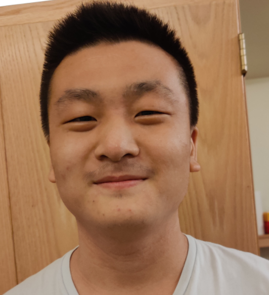

James Liu
- 46 Salem Street
- Winchester, MA, USA 01890
- (781) 850-6242
- liuxjames88@gmail.com
Highly motivated student currently pursuing a dual major in Computer Science and Information Technology & Web Sciences with a concentration in Web Technologies, looking for a summer internship in software development.
Education:
-
Rensselaer Polytechnic Institute
Student (Class of 2024) | 2020 - present
-
Troy, New York
Cumulative GPA: 3.69
-
Dual Major with Computer Science and Information Technology & Web Sciences with a concentration in Web Technologies. Course work includes Web Systems Development, Multivariable Calculus & Matrix Algebra, Foundations of HCI Usability, and Computer Organization.
Previous courses include an A in CS1 and an A- in Data Structures, Computer Organization, Foundations of Computer Science, and Multivariable Calculus and Matrix Algebra.
Work Experience:
-
Computer Science 1 Mentor | August 2021 - present
-
Duties include: leading 2-hour long office hour sessions for the computer science 1 class which involves providing 1-on-1 help for students' problems, grading and proctoring exams taken by said students.
-
Virtual Instructor | June 2021 - August 2021
-
Duties include: creating a curriculum to teach the Python coding language to students age 13-18, holding daily 2 hour classes for each class taught that week, giving constructive feedback to my supervisor on the topics covered during the lessons. Working 5 days 12-24 hours a week.
Projects
-
Fall 2021
-
Fall 2021
-
Created my own implementation of a C to assembly compiler that supports addition, subtraction, multiplication, division, and modulo (remainder) operators.
In charge of maintaining both front-end and back-end features of this service in HTML, CSS, JavaScript, PHP, and MySQL.
Skills/Accomplishments/Clubs:
-
SASE (Society of Asian Scientists and Engineers)
Member | Fall 2021
-
Eagle Scout
Awarded April 2nd 2021
-
Finished 28 Merit Badges, completed an Eagle Scout Project, underwent and passed the Eagle Scout Board of Review.
-
Dean's Honor List
Fall 2020 - Fall 2021 Semesters
-
Maintained above a 3.5 GPA for each term and received no grade below an A-.
-
National Piano Guild High School Diploma
Awarded 2019
-
Memorized and performed 10 separate piano pieces totalling to over 50 pages to a judge, memorized and played all major and harmonic/natural/diminished minor scales to a judge, displayed skill in sight reading and transposition.
- Language
-
Fluency in English, conversational Mandarin, studied Italian in middle and high school.
- Computer Skills
-
Technically proficient in MS Suite, Sony Vegas Pro 17, Adobe Premiere CC 2021, Adobe Photoshop CC 2021, Debian-based and Windows operating systems
Programming experience in Python, C, C++, Java, MIPS Assembly, bash scripting, PHP, MySQL (mariaDB), Javascript, React, HTML, and CSS.
Typing: 150 wpm.